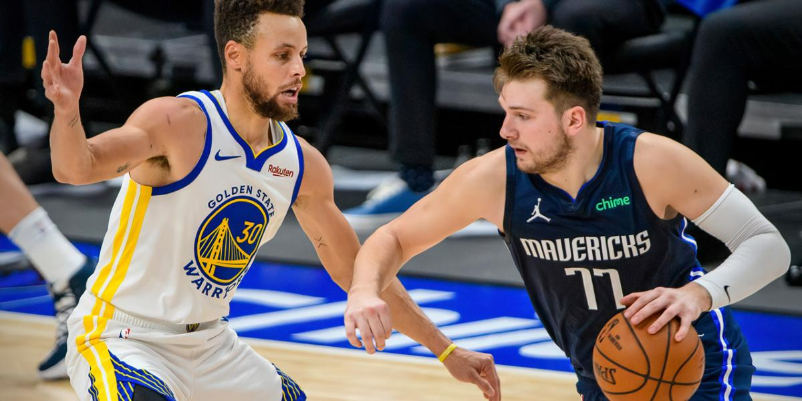
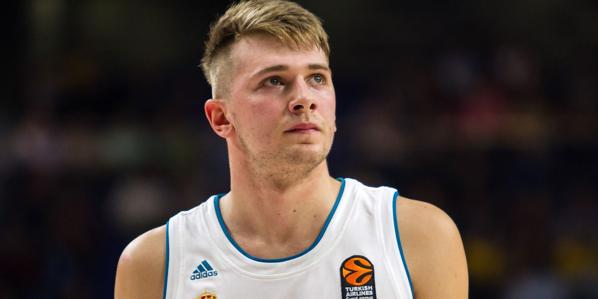

Luka Doncic



Es un jugador de baloncesto esloveno, que pertenece a la plantilla de los Dallas Mavericks de la NBA. Con 2,01 metros de altura juega en la posición de base, pero puede jugar tanto de escolta como de alero.
Su padre es Saša Dončić, exjugador de baloncesto de origen serbio que llegó a competir con la selección eslovena, y su madre es Mirjam Poterbin, exmodelo y bailarina de baile deportivo eslovena que fue campeona del mundo con el grupo Urska.
Luka comenzó a practicar a los seis años baloncesto, fútbol, judo y balonmano en la escuela primaria Miran Jarc de su ciudad natal, Liubliana, donde coincidió con el portero español Nacho Barriopedro, que ejercía de profesor invitado de educación física y que le enfocó hacia el deporte de la canasta.Tras decantarse por el baloncesto entró a formar parte de las categorías inferiores del Košarkarski klub Union Olimpija.
Actualmente es el jugador franquicia de los Dallas Mavericks de la NBA y una de las estrellas de la liga.